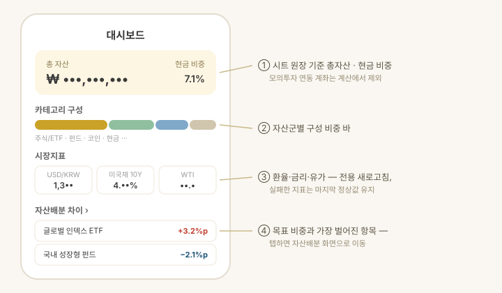

지원 방식: 둘러보기 · 앱에 직접 입력

화면 구성
- 총 자산 · 현금 비중 — 전체 자산과 현금성 자산 비율. 둘러보기든 앱 직접 입력이든 같은 화면으로 보여줍니다.
- 카테고리 구성 — 주식/ETF · 펀드 · 코인 · 현금 · 부동산 · 저축 · 채권별 비중 바. 탭하면 자산 구성 분석(건강점수·인사이트·배당·추정)으로 들어갑니다.
- 시장지표 — 환율·금리·유가·주가지수 11종: USD/KRW, 미국 국채 2년·10년, 한국 국채 5년·10년, WTI·브렌트유, 코스피·코스닥·S&P500·나스닥100. 주가지수·환율에는 최근 추이 스파크라인이 함께 표시됩니다. 일부 지표가 실패해도 성공한 지표만 갱신되고 실패분은 마지막 정상값을 유지합니다.
- 자산배분 차이 — 목표 비중과 가장 벌어진 항목. 탭하면 자산배분 화면으로 이동.
- 계좌별 자산 순위 · 뉴스 요약 — 각 섹션 헤더를 누르면 해당 탭으로 이동합니다.
알아두면 좋은 것
- USD 자산의 원화 환산은 시장지표의 USD/KRW 값으로 앱 안에서만 계산합니다.
- 금액은 눈 아이콘으로 가리거나 표시할 수 있습니다(스크린샷·공공장소 대비).
- 화면 모드는 설정 > 디스플레이에서 시스템 · 라이트 · 다크 중에 고를 수 있습니다. 같은 화면에서 글자 크기(작게 · 보통 · 크게)도 고릅니다(1.2.0부터).